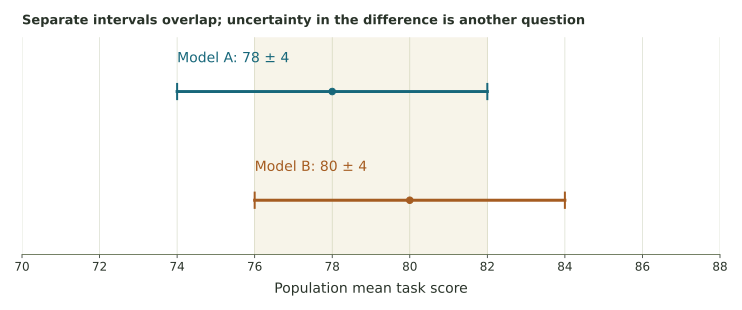

Evaluating a model from samples
Practice population identification, interval arithmetic, precision, and model comparison while examining the assumptions behind a benchmark conclusion.
Population claims from an evaluation sample
Suppose a research team wants to estimate how often a model gives acceptable answers to a defined kind of customer-service prompt. It selects a sample and computes a statistic. The population definition, selection method, and scoring standard determine what that statistic can tell us.
For these five practice tasks, use the course’s supplied-margin model, estimate ± margin, and its approximate square-root sample-size rule. A confidence interval addresses sampling uncertainty under a method; it does not repair selection or measurement bias.
1. Population or sample?
The team tests 100 randomly selected customer-service prompts; the model gives acceptable answers to 82.
2. Build an interval
A quality study reports an estimated population mean score of 78 with margin of error ±4.
3. Interpret the interval
4. Increase precision
A benchmark using n = 100 prompts has margin of error about 6 points. Hold the confidence level, variability, and design comparable.
5. Compare close benchmark estimates
Model A is estimated at 78 ± 4. Model B is estimated at 80 ± 4. Their reported intervals overlap substantially.
Intervals for two means and an interval for their difference

A comparison of model performance needs a defined population of tasks and information about how the studies relate. If the same prompts are used for both, the paired outcomes can matter. Separate intervals alone do not provide the uncertainty of the difference without further assumptions.
Overlapping intervals do not prove that the model means are equal. A higher sample mean does not show superiority on every prompt. The appropriate question is about a defined performance difference, measured under a suitable comparison design.